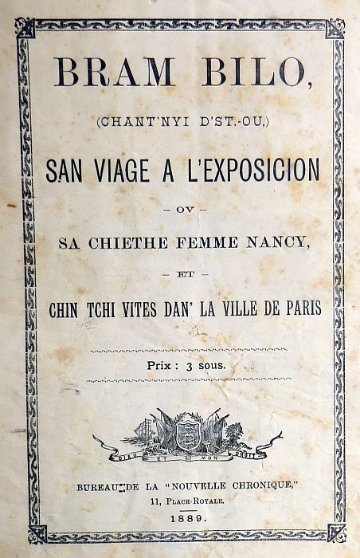

Bram Bilo (Chent'nyi d'St. Ou) à l'Exposition à Paris en 1889

Hôtel des Ambassadeurs, Paris.
Man chier Moussieu l'Feuvre,
J'vos avais dit dans ma dernièthe qué j'avaime r'chu eunne invitation pour allé à l'Elysée. J'y fumes:
Ch'tai superbeman bé, et j'pouorais pas vos dithe la maintchi de chainque jé vimes. J'montimes dans l'palais par eunne pathe dé d'grès, larges comme eunne rue; yiavé du tapis de vlous d'sus, et yiavé partout sus les d'grès, des flieurs, des estatues, et des soudars avec des halbardes d'eune care et dautre. Et pis, dans les parleurs yiavé eun peuplye!! Yiavé des officiers en uniforme, et des messieurs en kâsaque à coue d'héthonde et tous ov des gants bliancs et des souliés en tchui verni, et les dames avaient d'belles robes en souée ou en satin décolletais. J'té eun plyiasi qué d'vais lus belles êpaules, lus dos et lus estoumas. Man boenhomme, ch'tai ti bé!! Yiavé pas persounne habillis coumme nous la d'dans, et j'viyais ben tchi nos prenais pour des anglyiais. Nancy m'dit qu'chès femmes là devthais avé honte d'montré lus pé coumme chouna, et qu'chès pas yi tchithai d'même à maintchi d's'habillyie (entre-nous oul a raison - ou qu'monche à s'vielli et la pé d'ses éspaules a jauni hardi chès dernièthes aunés). Enfin, d'viers onze heuthes, quand nou zéthé deu être en s'quochant, né via la compognie tchi s'met à dansé.
Nancy, tchi'n sé pon dansé pus qu'eunne futaille, s'assit sus un sofa à les r'gardé, et mé, j'men fut dans eun être parleux, vés l'monde joué ès cartes, et l'zécouté pâlé.
Tandi q'jérgardais ôtoure dé mé, un moussieu avec un superbe uniform', ben de fais pus bé qu'autchun offici d'not' milice, avec des douzaines d' éstelles sus n'éstouma, et un sabre à san côtai, s'en vint m'dithe "Vous êtes anglais, monsieur, je crois?" Quâsiment, j'em fils, j'ais de St.-Ou; et la d'sus, nos v'la à d'visé - J'fus ben éstounai d'vais coumme chu moussieu là (j'ai seu d'pis qu'éj tai un contre-amiral) savai nos affaithes: Y'm pâlit d'not cauchie et m'dit qu'yn pouait pou comprandre que j'eussion continuai à flyiantchi tan d'sous à l'ieau. Y'm pâlit aitou du Juge Vaudin, et m'dit qué l'gouverneman français avé tai content d'sen jugement dans l'affaithe du Vice-Consul Ferrett et tch'il tai tchéstchon dé l'yienvé eunne boëte à sno en or, ov le portrait d'la tour Effel sus l'quoércle. Le vote par Balo fut distchuté, et y'm dit tch'in comprannai pon qu'javaimes yieu tan d'peine à faithe adopté la loué par l's'Etats, y'm dit étou qu'y criait qué l's'Etats avaient yieu tor dé permette la pèque du lanchou au râté.
J'nen r'venais pon de'l oué pâlé d'même, et j'lis dis. Oh! s'em fit-y, j'sais tout s'tchi s'passe à Jerry, v'la onze ans qué'j prends la Nouvelle Chronique, et j'aimthais mus m'passé d'man soupé qu'ed chute gazette là.
L'tems avanchai, et j'men fu vais ouais tchétait Nancy - J'trouvi eunne démié-douzaine dé messieux autoure dé yi, à la faithe pâlé en anglyiais, et à la nuorri d'gâche et d'vin. J'sentais l'besoin d'prendre eunne buochie d'tchique chose étou, chès tantchi j'men fu à eunne tablle ouaique j'apperchevais du jambon et d'la volâille. Coumme y'n yiavé rein a payi, j'en mé gêni ponet j'peux dithe qu'la tablle du présidan d'la République etai ben servie - ch'tai pon eunne malheutheuse boëte du hoummar ou'd sardine avec offuche d'la gelée d'agriotte et eunne gache-à-corrinte coumme entre nous - mais yiavé d'la volaille, du jambon, des sanouiche, et dan des p'tites terrines dé tchi horriblyeman bon qu'avé des lopins nièrs dédans - nou'm dis qu'chès lopins là, qué'j prennais pour du tcherbon, 'tais des truffes - et pis du champanne, en veux-tu, en v'la! Man buonhoumme, j'nen avais janniais gouté qu'eunne fais d'ma vie, ch'fu quand not' Moussieu d'St.-Ou fut élu Juge, il en envyi tchiques boutelles qué'j bumes à yeunne de nos réunions d'police, et j'nen eu chute fais là qu'eunne verrée ou deux - mais chute fais ichin, j'en ai ben bu quasi eunne boutillyie a man tousseu. Enfin, tout à eunne fin, et coumme y qu'monchait à s'faithe tar, j'men fut cherchi Nancy - j'la trouvi endormie sus un sofa, et ou t'nai oquo sus ses g'nors eunne assiète ov la maintchi d'un pitho d'sus, j'pensi qué'j sé dommage de perdre chu buon morcé d'ouèsé, et j'l'enflyubi dans man muoché.
J'la rêvyilli, et jé d'sendimes sans dithe 'goodbye' à personne. J'prinmes eunne vétuthe, et j'rentrimes à notr' hotel coumme le jour sé faisait.
Quan j'nos rêvillimes, d'vièrs neuf heuthes, Nancy s'trouvi pouoreman, et ou'm dit qué'j fethais mus d'allé m'proumnai tout seu, car quant à yi ou s'sentai trop faillie (nou m'a dit que l'ieau d'Paris a cht'èffait là sus ben des gens tchi n'son pon accouetumais à en bèthe) et qu'ou n'sortithai pon d'journée.
J'men fut don tousseu, et en passant, j'dis au ouaiteur d'avé l'yi sus Nancy et d'li porté tchiques gazettes - i'm démandi si j'tai des gazettes anglliaiches ou françaises - N'ya pon d'soin qué j'lis dis, pourvu qué j sé d'grandes gazettes.
J'men fut don déjeunné tout seu dans un restauran sus l'boulvar, et pis j'descendis l'avenue de l'Opéra, et d'là à la rivièthe y-iou qué j'prins un steamer (les parisiens appèle lus steamers des "mouches") tchi'm condisi pour quat sous drét à l'espesicion - j'y resti tou'l jour a m'proumnai partout et je n'pourrais pas vos dithe lé quart de cheq'e'j vit - j'alli vais les maisons des Colonies dans les gardins du Trocadero, et j'entri dans eunne plièche yiou q'yavé des filles arabes, habillies en mouslin, et oquo yien avé pas ben des verges de chute mouslin, tchetais a s'teurtre et a s'trimousée en l'vant les bras et les gambes en haut, d'eunne ben drole de monièthe. Un vaisin m'dit que ch'tai d'même qu'nou danse en Kabilie, et qué j'tai la danse du ventre - j'pensi tout-dun-cou qu'si la Commercial Association faisaient dansé chès filles là au Pavillon, les Jerriais en pâsllaient longtemps.
J'fu étou dans un café Turque ouais tchi vos dounne du café dans des tasses pas pus grandes qu'un cocotchi, et ouaisque les Turcos, assis sus des couessins, fume des pipes avec des tuyaux en injinrubber dé quatr ou chinq pis d'long, tandi qu'des turquesses dans des braies d'souée, cache les moques dé d'sus lus fache ov des plieunimes de pan - et pis j'men fu dans eunne être plièche yiou q'yavé des Chinouais - J'navais janmais veu d'chinouais d'vant, et j'fu bon éstounai d'lus vais eunne longue coue tchi lus pendai avaux l'dos - J'pouvais pas craithe qué j'tai lus qu'veux, et en passan ôprès d'eun vier chinouais, j'halli d'sus un mio raide pour vais. Y poussi un brai! et ne v'la toute la raccachie tchi s'met a m'bargouaichi en chinnouais, ch'tai a tchi criethai l'pus haut - J'pensi tchil tai temps qué j'menfusse vaie tchique ôtre tchuthiosit et j'les laissi continuai la conversation san mé; quan j'fu d'hors j'mapperchu qué dans ma presse j'avais oublié vot paraplyie dans lu cambuse, et, ma fé j'nalli pon l'cherchi; j'pensi tchi m'éthais p't'être mantchi d'respé et ethaient offuche gâté ma casaque ou fait tchique ôtre dro - Chestan-tchi jai peux qué vot paraplyie, man chièr Mess Le Feuvre, né s'nalle en Chine. De'd là, j'men fu dans la gallie des bieaux-ars, yiou que j'vi oquo eunne fais ches portrais de tchi j'vos avais déja pâllé. J'éthais ben voulu en accaté deux ou trais pour met' dans not' buon parleux à St.-Ou, mais quan' j'démandi l'prix les bras m'en tchites avaux l'corps, y m'éthai fallu vendre chinq ou siez vregies d'terre pour avé eun traccas d'pit portrai pas pus gran que l'fond d'eunne casse a pomme-terre, et oquo l'vendeux m'dit que j'tai cheq' yiavé d'miyieu marchi.
Enfin, oprès avé resté la jusqu'a siez heuthes, j'sorti et j'prins eunne buss tchi m'mins bas ôprès l'grand Opéra et coumme j'tais tousseu j'pensi qué'j pouorrais pour eunne fais m'accordé eun diné d'preumièthe classe, ches-tan-tchi j'alli au Grand Hotel, Boulvar des Capucines, et tandi qu'eunne band jouai d'la musique j'mangaimes un "d'assise d'héritage."
Savous seulman tchèque chès qu'eun Tournedos à la Chasseur, ou ben Poularde à la Princesse, ou ben Gelinotte bardée sur croustade? Et ben, mé, Bram Bilo, de St.-Ou, j'ai mangi ditai, et yia pas for de St.-Ouanais tchi peuv' en dithe autant!
J'pense qu'en vla assez pour chute fais, chez pour tchi,
A la préchaine, man vièr anmin,
BRAM BILO
P.S.—J'ai éscrit au coüesin Clem dé nos vendre eunne autre g'niche, car mes ven-trais louis n'duth'ont pas long tems et Nancy pâle de resté oquo eunne huitaine dé jours.
Eune difféthente édition:
Hôtel des Ambassadeurs, Paris.
Man chièr Moussieu L'Feuvre,
J'vos avais dit dans ma derniéthe qué j'avaîmes er'chu eunne invitation pour aller à l'Elysée. J'y fûmes.
Ch'tait superbement bé, et j'pouorrais pas vos dithe la maintchi dé chein qu' jé vîmes. J'montîmes dans l'Palais par eunne pathe dé d'grés larges comme eunne rue ; y'avait du tapis dé vlous d'sus, et y'avait partout sus les d'grés des flieurs, des estatues et des soudards avec des halbardes d'eunne carre et d'autre. Et pis, dans les parleurs y'avait eun peupl'ye ! Y'avait des officièrs en uniforme, et des messieurs en câsaque à coue d'héthonde et tous auv' des gants bliancs et des souliés en tchui verni, et les dames avaient d'belles robes en souée ou en satin dêcolletées. Ch'tait un pliaîsi qué d'vaie lus belles êpaules, lus dos et lus estoumas. Man boenhomme, ch'tait-i' bé! Y'avait pas persounne habillis coumme nous là d'dans, et j'viyais bein tch'i' nos prenaient pour des Angliais. Nancy m'dit qu' ches femmes-là devthaient aver honte d'montrer lus pé coumme chouna, et ch'est pas yi tch'ithait d'même à maîntchi d's'habillie (entre nous, oulle a raison - ou c'monche à s'vieilli et la pé d'ses épaules a jauni hardi ches derniéthes années). Enfin, d'viers onze heuthes, quand nou-s-éthait deu être en s'couochant, né v'là la compognie tchi s'met à danser.
Nancy, tchi n'sait pon danser pus qu'eunne futaille, s'assit sus un sofa à les r'garder, et mé, j'm'en fus dans eun autre parleux vaie l'monde jouer ès cartes, et l's êcouter pâler.
Tandi qu' j'èrgardais autouore dé mé, un moussieu avec un superbe uniforme, bein des fais pus bé qu' autchun offici d'not' milice, avec des douzaines d'êtelles sus s'n estouma et un sabre à san côté, s'en vint m'dithe "Vous êtes Anglais, monsieur, je crois?". "Quâsiment", jé m'fis, "j'sis dé St. Ou". Et là-d'sus nos v'là à d'viser. J'fus bein êtouné d'vaie coumme chu moussieu-là (j'ai seu d'pis qué ch'tait un contre-amiral) savait nos affaithes. I' m'pâlit d'not' cauchie et m'dit qu'i' n'pouait pon comprendre qué j'eussions continué à fliantchi tant d'sou à l'ieau. I' m'pâlit étout du Juge Vaudin, et m'dit qué l'Gouvernement Français avait 'té content d'san jugement dans l'affaithe du Vice-Consul Ferrett et tch'il 'tait tchestchion dé li'env'yer eunne boëte à sno en or, auv' lé portrait d'la tour Effel sus l'couércle. I' m'dit étout qu'i' criyait qué l's Êtats avaient ieu tort dé permettre la pêque du lanchon au râté. J'n'en r'venais pon dé l'ouer pâler d'même, et j'lî dis. "Oh!", sé m'fit-i', j'sai tout c'tchi s'passe à Jerry ; v'là, onze ans qué j'prends la 'Nouvelle Chronique', et j'aimthais mus m'passer d'man souper qué d'chutte gazette-là".
L'temps avanchait, et j'm'en fus vaie où'est tch'était Nancy. J'trouvis eunne démié-douzaine dé messieurs autouore dé yi, à la faithe pâler en Angliais, et à la nouorri d'gâche et d'vin. J'sentais l'besoin d'prendre eunne bouochie d'tchiquechose étout, ch'est en tchi j'm'en fus à eunne tablle où'est qu' j'aperchevais du jambon et d'la volaille. Coumme i' n'y'avait rein à payi, jé n'mé gênis pon, et j'peux dithe qu'la tablle du Président d'la République était bein servie. Ch'tait pon eunne malheutheuse boëte dé hoummard ou d'sardine avec ofuche d'la gelée d'agriotte et eunne gâche à corinthe coumme entre nous - mais y'avait d'la volaille, du jambon, des sanouiches, et dans des p'tites terrines dé tchi horribliément bouon qu'avait des lopins nièrs dédans (nou m'dis qu'ches lopins-là qué j'prenais pour du tcherbon 'taient des truffes) et pis du champanne, en veux-tu en v'là! Man bouonhoumme, j'n'en avais janmais gouëté qu'eunne fais d'ma vie. Ch'fut quand not' Moussieu d'St. Ou fut êlu Juge; il en env'yit tchiques boutelles qué j'bûmes à ieunne dé nos rêunions d'police, et j'n'en eus chutte fais-là qu'eunne verrée ou deux. Mais chutte fais ichîn j'en ai bein bu quâsi eunne boutillie à man tout seu. Enfin, tout a eunne fin, et coumme i' c'monchait à s'faithe tard, j'm'en fus cherchi Nancy. J'la trouvis endormie sus un sofa, et ou t'nait aucouo sus ses g'nors eunne assiette auv' la maintchi d'un pitho d'sus. J'pensis qué ch'sait dommage de perdre chu bouon morcé d'ouësé, et j'l'enfliubis dans man mouoché. J'la rêvillis, et jé descendîmes sans dithe "goodbye" à personne. J'prinmes eune vétuthe, et j'rentrîmes à notr' hôtel coumme lé jour sé faisait.
Quand j'nos rêvillîmes, d'vièrs neuf heuthes, Nancy s'trouvit pouorement, et ou m'dit qué jé f'thais mus d'aller m'proumner tout seu, car quant à yi ou s'sentait trop faillie (nou m'a dit qué l'ieau d'Paris a ch't êffet-là sus bein des gens tchi n'sont pon accouëtumés à en béthe) et qu'ou n'sortithait pon d'journée.
J'm'en fus don tout seu, et en passant j'dis au ouaîteur d'aver l'yi sus Nancy et d'lî porter tchiques gazettes. I m'démandit si ch'tait des gazettes Angliaiches ou Françaises. "N'y'a pon d'soin", qué j'lî dis, "pourvu qué ch'sait d'grand' gazettes." J'm'en fus don dêjeunner tout seu dans un restaurant sus l'boulevard, et pis j'descendis l'avenue dé l'opéra, et d'là à la riviéthe iou qué j'prins un "steamer" (les Parisiens appellent lus "steamers" des mouches) tchi m'condisit pour quat' sou drait à l'esposicion. J'y restis tout l'jour à m'proumner partout et jé n'pouorrais pas vos dithe lé quart dé chein qué j'vis. J'allis vaie les maisons des Colonies dans les gardîns du Trocadéro, et j'entris dans eunne pliaiche iou qu' y'avait des filles Arabes, habillies en mouslinne - et aucouo y'en avait pas bein des verges, dé chutte mouslinne - tch'étaient à s'teurtre et à s'trimousser en l'vant les bras et les gambes en haut d'eunne bein drôle dé moniéthe. Un vaîsîn m'dit qué ch'tait d'même qué nou danse en Kabilie, et qué ch'tait la danse du ventre. J'pensis tout d'un co qu'si le Commercial Association faisaient danser ches filles-là au Pavillon, les Jerriais en pâl'laient longtemps!
J'fus étout dans un café Turque où'est tch'il vos dounne du café dans des tasses pas pus grandes qu'un cocotchi, et où'est qu' les Turcos, assis sus des couessins, fument des pipes avec des tuyaux en "injinrubber" dé quatre ou chinq pids d'long, tandi qu' des Turquesses dans des braies d'souée cachent les môques dé d'sus lus faches auv' des plieummes dé pan. Et pis j'm'en fus dans eunne autre pliaiche où'est qu' y'avait des Chinouais - j'n'avais janmais veu d'Chinouais d'vant, et j'fus bein êtouné d'lus vaie eunne longue coue tchi lus pendait avaû l'dos ; j'pouvais pas craithe qué ch'tait lus qu'veux, et en passant auprès d'eun viér Chinouais j'halis d'sus un mio raide pour vaie. I' poussit un brai, et né vl'à toute la racachie tchi s'met à m'bargouaîchi en Chinouais - ch'tait à tchi criethait l'pus haut! J'pensis tch'il 'tait temps qué j'm'en fusse vaie tchique autre tchuthiosité et j'les laissis continuer la conversation sans mé. Quand j'fus d'hors j'm'aperchus qué dans ma presse j'avais oublié vot' paraplyie dans lus cambuse et, ma fé, j'n'allis pon l'cherchi. J'pensis tch'i' m'éthais p't-être mantchi d'respect et éthaient ofuche gâté ma câsaque ou fait tchique autre dro. Ch'est en tchi, j'ai peux qué vot' paraplyie, man chièr Mess Lé Feuvre, né s'n aille en Chine. Dé d'là j'm'en fus dans la gal'lie des bieaux arts iou qué j'vis aucouo eunne fais ches portraits dé tchi j'vos avais dêjà pâlé. J'éthais bein voulu en acater deux ou trais pour mett' dans not' bouon parleux à St, Ou, mais quand j'démandis l'prix les bras m'en tchîtent avaû l'corps ; i' m'éthait fallu vendre chinq ou siex vrégies d'terre pour aver un tracas d'p'tit portrait pas pus grand qué l'fond d'eunne casse à poumme-terre, et aucouo l'vendeux m'dit qué ch'tait chein qu' y'avait d'miyeu marchi!
Enfin, auprès aver resté là jusqu'à siex heuthes, j'sortis et j'prins eunne "buss" tchi m'mint bas auprès l'Grand Opéra, et coumme j'tais tout seu j'pensis qué j'pouorrais pour eunne fais m'accorder eun dîner d'preumiéthe classe. Ch'est en tchi j'allis au Grand Hôtel, Boulevard des Capucines, et tandi qu'eunne "band" jouait d'la musique j'mangeaîmes un "d'assise d'héritage".
Sav'ous seulement tch'est qu' ch'est qu'eun Tournedos à la Chasseur, ou bein eunne Poularde à la Princesse, ou bein eunne Gelinotte Bardée sur Croustade? Eh bein, mé, Bram Bilo, dé St. Ou, j'ai mangi d'ité, et y'a pas fort dé St. Ouenais tchi peuvent en dithe autant!
J'pense qu'en v'là assez pour chutte fais. Ch'est pourtchi,
A la préchaine, man viér anmin,
BRAM BILO.
P.S. - J'ai écrit au couësin Clem dé nos vendre eunne autre geniche, car mes ven-trais louis n'duth'thont pas longtemps et Nancy pâle dé rester aucouo eunne huitaine dé jours.
Eune vèrsion en Dgèrnésiais faite par TA Grut:
Une Soirée à l'Elysée
Hôtel des Ambassadeurs, Paris.
Men chiar Moussieu, - J'vous avais dit dans ma draïne lettre que j'avaimes r'chu un' invitâtion pour allaï à l'Elysée. J'y feûmes.
Ch'tait superbement bel, et je n'pourrais pâs vous dire la mainti de chu qu'j'y vïmes. J'montaïmes dans l'Palais par un' pâre de dégraïs, large comme un' rue; y'avait un tapis de v'lous d'sus, et y'avait partout sus les dégraïs des fllieurs, des statues, et des soudards auve des halbardes d'eune câre et d'autre. Et pis, dans les parleux y'avait donc du monde!! Y'avait d's officiers en unifôrme, et des mêssieurs en câsaque à coue d'héthonde, et tous auve des gànts blliàncs et des sâulers en cuir varni, et les dâmes avaient des biaux frocs en soûaie et en satin toutes décolletaïes. Ch'tait un pliaisi d'vée leus belles épaules, leus dos, et leus estoumâs. Men bouan hômme, ch'tait-t-i' donc bel!! I' n'y'avait pâs persônne graie comme nous là -d'dans, et j'veyais bien qu'i' nous pernaient pour d's Angllais. Nancy m'dit qu'ches fâmmes-là devraient aver honte d'mourtraï leus pel comme chennà, et que ch'n'est pâs ielle qu'irait d'même à la mainti dégraïe, (entre nous al' a raison - à c'menche à vieillir, et la pel d'ses épaules a jauni hardi d'ses draïnes annaïes). Enfin, d'viar onze heures, quànd nous errai deus être en s'quochànt, v'lo la compagnie qui s'met à dànsaï.
Nancy, qui n'sait poui dànsaï pus qu'un' fûtaïlle, s'assiévit sus l'sofa à les r'gardaï, et mé, j'm'en fus dans un autre parleux vée l'monde jouaï ès cartes, et l's écoutaï pâlaï.
Tandis que je r'gardais autouor de mé, un moussieu auve un' superbe unifôrme, bien des fais pus bel qu'aucueun officier d'n't' Milice, àtou des douxaïnes d'ételles sus s'n éstoumâ, et un sâbre à sen cotaï, s'en vint m'dire: "Vous êtes Anglais, monsieur, je crois?" - "Quâsiment," je m'fit, "j'sis d'Saint-Ouen." Et là-d'sus, nous v'lo à d'visaï. J'fus bien étounaï d'vée comme chu moussieu-là (j'ai seû d'pis qu'ch'tait un Contre-Amiral) savait nos affaires. I' m'pâlit d'not' cauchie, et m'dit qu'i' n'pouvait poui comprendre que j'eussions continuaï à échippaï tànt sous à l'ieaue. I' m'pâlit étout du Juge Vaudin, et m'dit que l'Gouvernément frànçais avait ataï content d'sen jugement dans l'affaire du Vice-Consul Ferrett, et que'il était question de y'enviaï un' boëte à snoffe en or, auve le portrait d'la Tour Eiffel sur l'couverclle. Le vote par ballot fut étou discutaï, et i' m'dit qu'i' n'comprénait pâs qu'j'avaimes ieue tànt d'païne à faire adoptaï la loué par l's Etâts; i' m'dit étout qu'i' croyait que l's Etâtd avaient ieue tort de permettre la pêque du lànchon au râté. J'n'en r'venais poui de l'ouir pâlaï d'même, et j'l'y dis. "Oh!" s'm'fit y, "j'saï tout chu qui s'pâsse à Jerry: v'là onze àns que j'prends la "Gazette." et j'aïm'rais mue m'passaï d'men soupaï que d'chute "Gazette"-là."
Le temps avànchait, et j'm'en fus vée oueque était Nancy. J'trouvi un' demi-douzaine de messieus autouor de ielle à la faire pâlaï en angllais, et à la nourrir d'gâche et d'vin. J'sentais l'besoin d'prendre un' bouchie d'quique chose étou; eh don! j'm'en fus à un' tablle ouèque j'aperchevais du jàmbon et d'la volaille. Comme i' n'y avait rien à payer, je n'm'en gêni poui, et j'peus dire qu'la tablle du Président d'la Republique était bien servie. Ch'n'tait poui un' malheureuse boëte de houmard ou d'sardeine auve peut-être d'la gllaïe d'aigrette et eune gâche à corinte, comme entre nous; mais y'avait d'la volaille, du jàmbon, des sanouiches, et dans des p'tits vaissieaux d'qué horribllement bouen, qu'avait des lopins par dédans - nou m'dit qu'ches lopins-là, qu'j'pernais pour du querbon, étaient des truffes, et pis, du chàmpanne, en veur-tu, en v'là!
Men bouen hômme, j'n'en avais jamais goutaï qu'un' fais dans ma vie: ch'tait quànd not' moussieu d'Saint-Ouen fut élu Juge. Il en envyi quiques bouteilles que j'beûmes à ieune de nos réunions d'police, et j'n'en eu chute fais-là qu'eune verraïe ou daeux - mais chute fais ichin, j'en ai bu quâsi eune boutillie à men tout seu. enfin, tout à un' fin, et comme i' c'menchait à être tard, j'm'en fus trachier Nancy. J'la trouvi endormie sus un sofa, et a t'nait acouare sus ses génouaïs un' assiette àtout la maïnti d'un pigeon d'sus. J'pensi que ch'tait piti d'perdre chu bouen morcé d'ouêsé, eh donc! je l'env'loppi dans men moucheux. J'la revilli, et j'nous en allaimes sàns dire "good-bye" à persônne. J'prèmes un' cârosse, et j'r'entrèmes à not' Hotel comme le jour s'faisait.
Quànd j'nous revillièmes, d'viar neuf heures, Nancy s'trouvi pourement, et m'dit que j'f'rais mûe d'allaï m'pourmenaï tout saeu, car quànt à ielle, à s'trouvait dérangie.
TAG
Viyiz étout:
{kind=link}